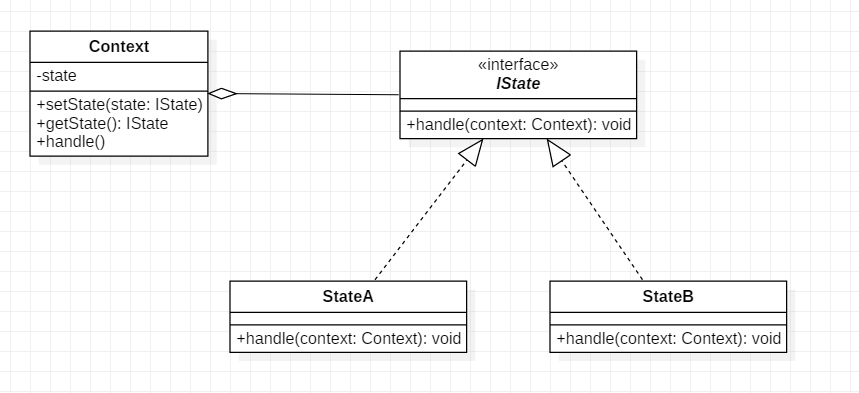

在软件开发过程中，应用程序中的有些对象可能会根据不同的情况做出不同的行为，我们把这种对象称为有状态的对象，而把影响对象行为的一个或多个动态变化的属性称为状态。当有状态的对象与外部事件产生互动时，其内部状态会发生改变，从而使得其行为也随之发生改变。如人的情绪有高兴的时候和伤心的时候，不同的情绪有不同的行为，当然外界也会影响其情绪变化。
对这种有状态的对象编程，传统的解决方案是：将这些所有可能发生的情况全都考虑到，然后使用 if-else 语句来做状态判断，再进行不同情况的处理。但当对象的状态很多时，程序会变得很复杂。而且增加新的状态要添加新的 if-else 语句，这违背了“开闭原则”，不利于程序的扩展。
以上问题如果采用“状态模式”就能很好地得到解决。状态模式的解决思想是：当控制一个对象状态转换的条件表达式过于复杂时，把相关“判断逻辑”提取出来，放到一系列的状态类当中，这样可以把原来复杂的逻辑判断简单化。
状态模式的定义: 对有状态的对象，把复杂的“判断逻辑”提取到不同的状态对象中，允许状态对象在其内部状态发生改变时改变其行为。
角色
UML

代码
public interface IState {
void handle(Context context);
}
public class Context {
private IState state;
public IState getState() {
return state;
}
public void setState(IState state) {
this.state = state;
}
public void run(){
state.handle(this);
}
}
public class StateA implements IState {
@Override
public void handle(Context context) {
System.out.println("state A");
context.setState(new StateB());
}
}
public class StateB implements IState {
@Override
public void handle(Context context) {
System.out.println("state B");
context.setState(new StateA());
}
}
client
public static void main(String[] args){
Context context = new Context();
context.setState(new StateA());
for(int i = 0; i < 10; i++){
context.run();
}
}
输出:
state A
state B
state A
state B
state A
state B
state A
state B
state A
state B
优点
缺点
解读
状态模式的定义是: 当一个对象的内在状态改变时允许改变其行为，这个对象看起来像是改变了其类.
这也是状态模式之所以是行为型模式的原因, 因为突出了一个类行为的改变.
上面的结构中可以看出, 我们关注的对象是context, 在不断运行的过程中, 其行为是不断变化的.